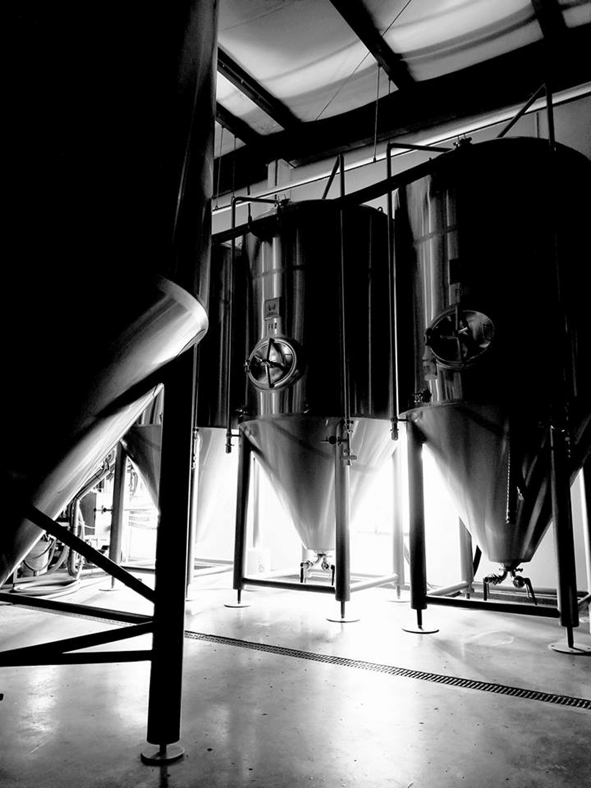
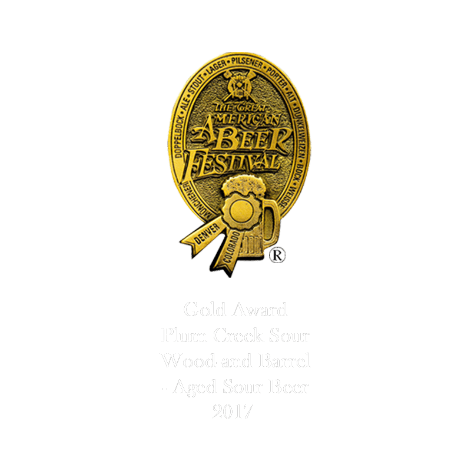
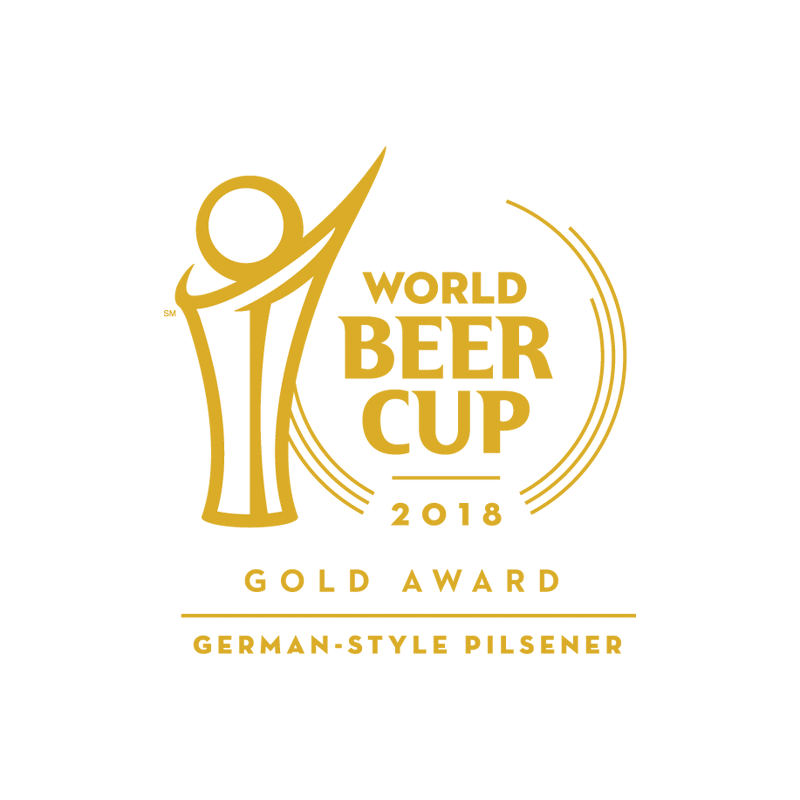
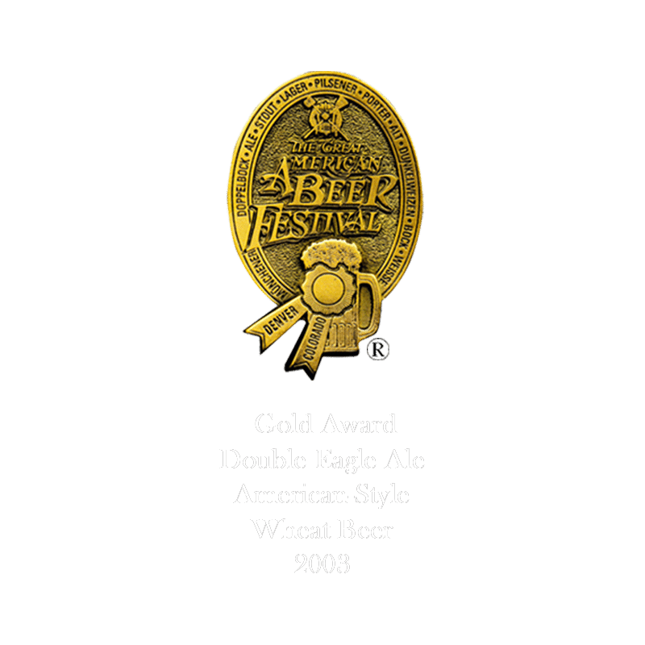
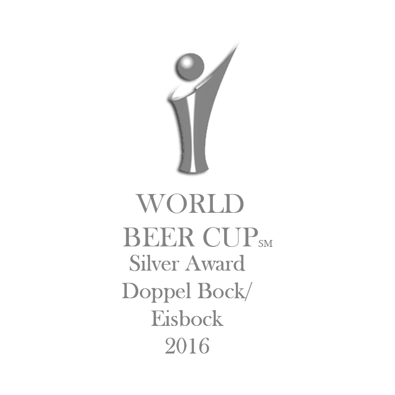
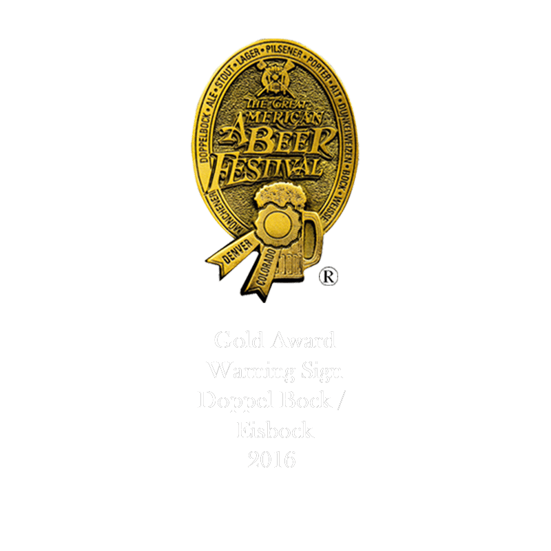
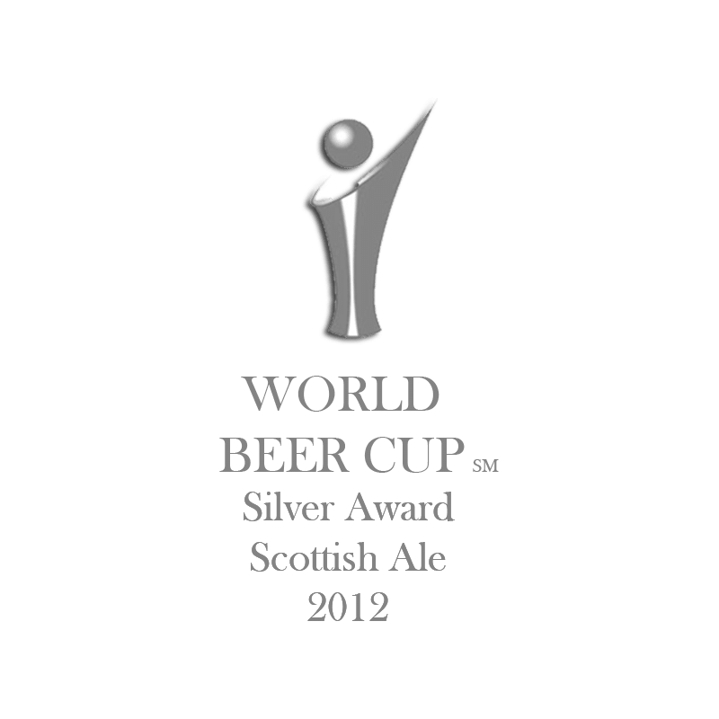
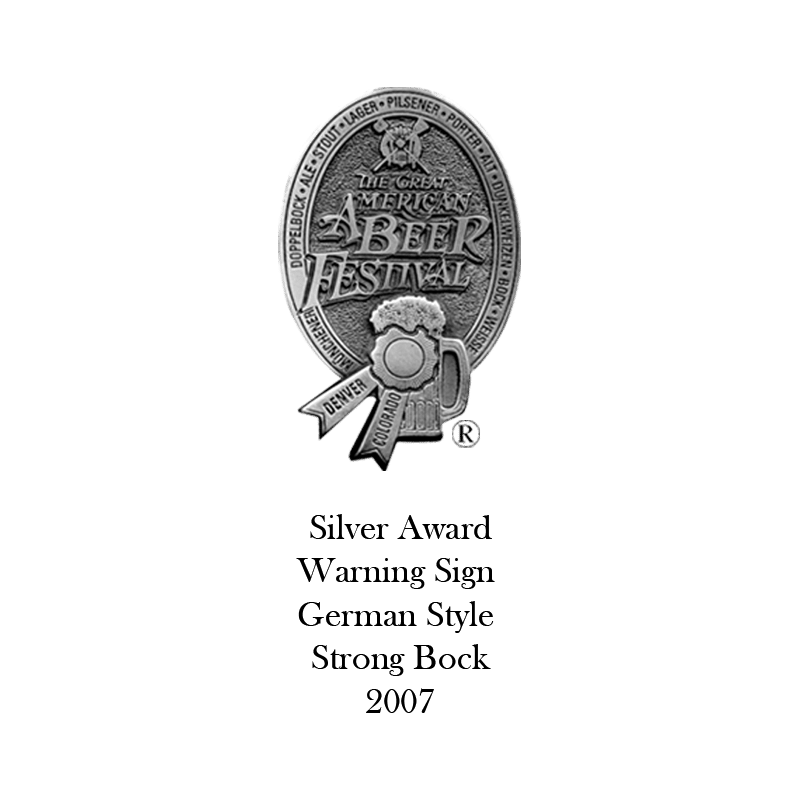
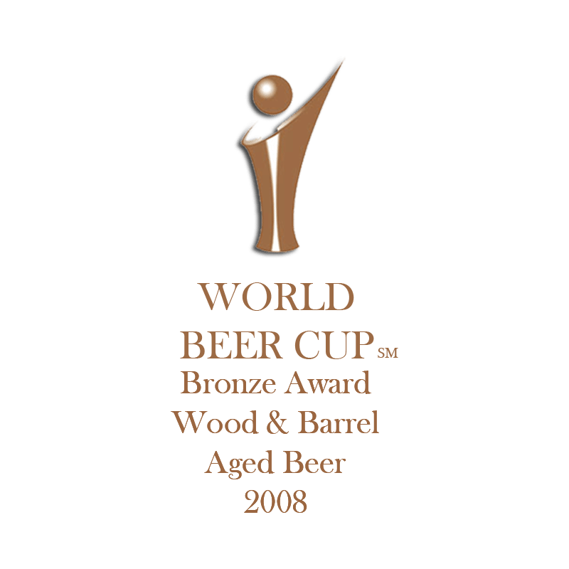
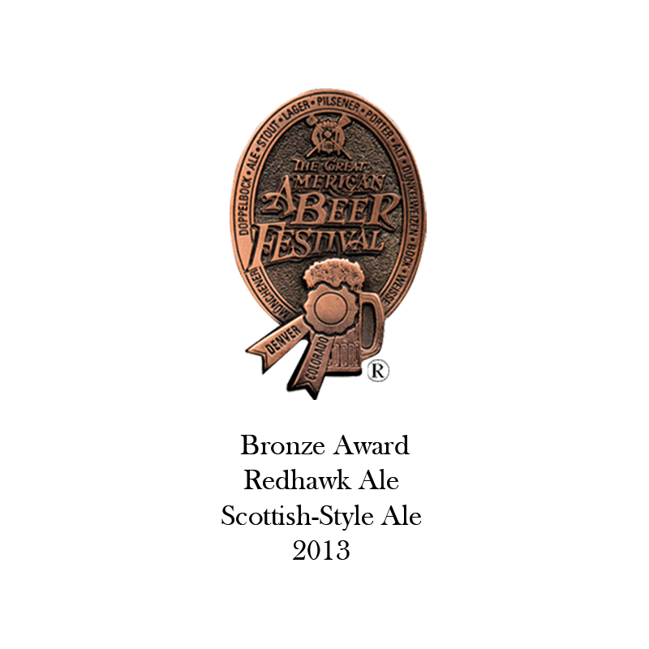

OUR AWARD-WINNING BREWS
Rockyard is the longest running brew pub in Douglas County, having been opened in 1999 by four Colorado-raised siblings. Rockyard’s beers have won medals at many prestigious beer competitions including the Great American Beer Festival, World Beer Cup and the Colorado State Fair.

Some of those medals include: The Gold Medal at the World Beer Cup for Primadonna in 2018, the Gold Medal at GABF for Plum Creek Sour in 2017, the Gold Medal at GABF for Warning Sign Imperial Bock Beer in 2016, the Silver Award at the World Beer Cup in 2016 in the German Doppel Bock category for our Warning Sign Imperial Bock Beer, and the Silver Award at the World Beer Cup and Bronze Medal at the GABF in 2013 for the Redhawk Scottish Ale, Bronze and Gold Medals in different years for our Double Eagle American Wheat Ale, and Bronze Medal at the World Beer Cup in 2008 for the Bourbon Barrel Stout.
MEDALS










Open daily at 11am. (303) 814-9273 880 Castleton Road, Castle Rock, CO 80109. © 2021 Rockyard Brewing Co. All rights reserved.